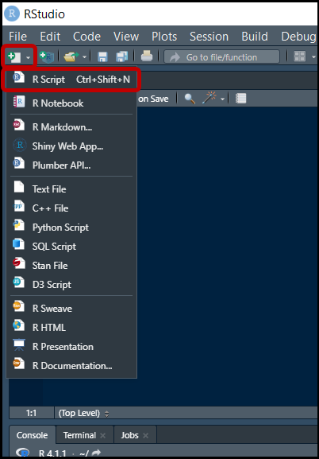
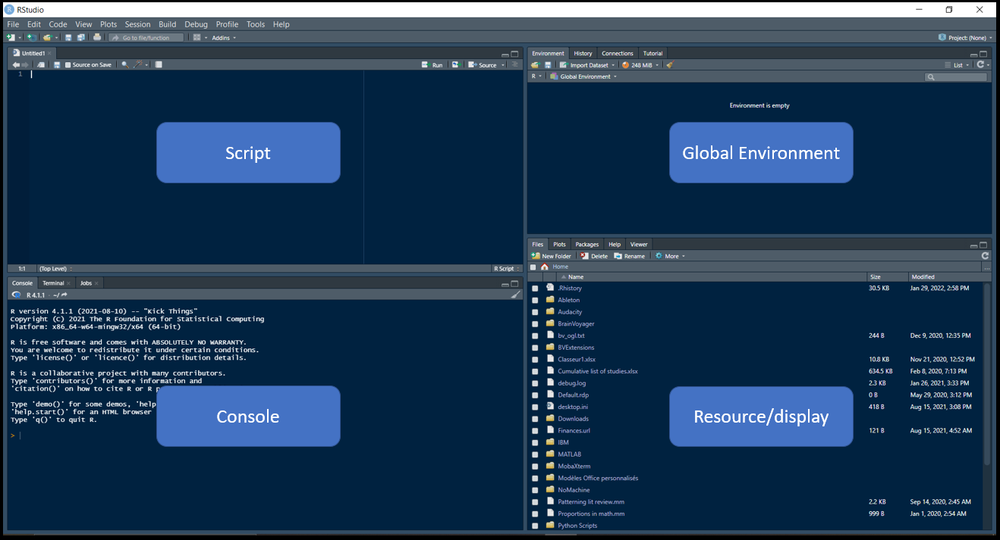
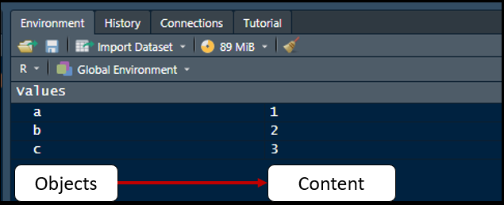
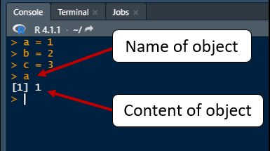
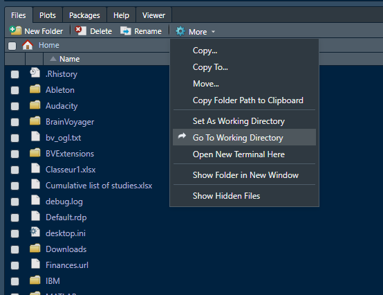
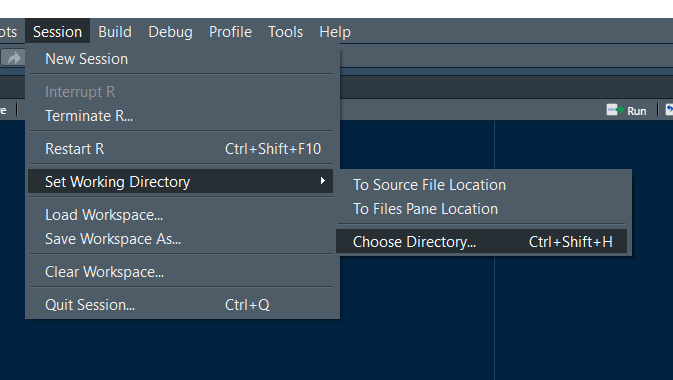

Intro to RStudio
Objectives
- Learn what each section in the layout control
- Learn how to start a new script
- Learn what to include at the start of a new script
What is the hardest step in coding? Easy, the first part: Starting.
Having the courage to start coding is hard enough, but hitting roadblocks at the very beginning, as we often do, makes it even harder. The first part of the tutorial will introduce you to the RStudio layout, highlighting useful functions you can use to help you solve problems down the line. In the second part, I will show you how to setup your first R script.
Step 1: Installing R
This tutorial will not go into detail about how to install R and RStudio. Very detailed instructions on how to do that can be found here.
Step 2: Understanding the Rstudio layout
Since I'm assuming you are opening RStudio for the first time, we will start by creating our first script.
Creating a script
 Creating a script can be easily done by going to the top left corner of the screen and clicking on the white square with a green plus sign. Once you click on that, a menu will appear from which you can pick what type of script you want to create. I suggest selecting the first option "R Script" to start. You can also create a new script by clicking on the File menu > New file > R Script or by pressing CTRL+SHIFT+n.
Now that you have an R script up and ready to go, let's take a look at the layout. You will notice that there are 4 sections in a typical layout: the script, the console, the global environment and the display/resources section. Let's inspect each of these sections a little further.
Writing and Executing Code in the Script and Console
There are two places in RStudio you can write code: the script and the console.
The script section is used to write out code which you can then run later. You can write multiple lines before deciding to actually run/execute any of them. This is a little bit like a cookbook in which you write out all of the steps in a recipe.
To execute code written in the script, you can either place your cursor on the line you want to execute and press CTRL+ENTER or click on the Run button at the top right of the Script section. If you want to run multiple lines, you can highlight the section of code you want to execute and again either press CTRL+ENTER or click on the Run button. NOTE: In the script section, press ENTER by itself will note execute the code.
a = 1
b = 2
c = 3Notice that each time you run the code, the line(s) you run appear in the console at the bottom. In other words, the console is used to run/execute code. If you wanted, you could write code directly into the console, and then press ENTER to execute it. However, doing this will only allow you to write one line at a time before executing and writing the following line. That is why most of your code will be written in your script, and the console will mostly be used for sanity checks, troubleshooting and executing one-time commands. Going back the cooking analogy, the console is like the sous-chef. They can either read and carry out the recipe from the cookbook or you, as the head chef, can tell them to complete specific tasks here and there.
Visualizing Objects in the Global Environment
You may also have noticed, when running the previous lines of code, that values appeared in the global environment, our next section of interest. Briefly, the global environment is where all of your objects are stored.
In essence, objects have 2 parts to them: a name and a content. For example, in our previous code, a is an object that is called "a" (name) and has value of 1 (content). This is a very simple object (i.e., a single value), however we will soon see that you can have more complex objects such as lists, matrices, dataframes, tables, etc. You can inspect the content of an object either by looking at the global environment tab or by writing the name of the object in the console and pressing enter.
On a side note: Another term for saving your object to the global environment for the first time is to "declare". In other words, to inspect or use an object, you must first "declare" its name and content.
 
Now objects a, b and c were saved in our global environment when we executed the code above, but what happens when we try to inspect an object that is not in our global environment?
This is possibly one of the most common errors you will encounter, and luckily one of the easiest to solve, with a little bit of practice. Common sources of error include 1- not running the bit of code declaring the object you are trying to use/visualize, or 2- misspelling the name of the object you are trying to use/visualize (ah, the classic typo!). Another common scenario in which you might encounter this type of error is when 1-using functions from specific packages or 2-when importing data from a folder on your computer, which brings us to the last of the four sections...
Installing packages, setting working directories and other fun stuff
The last section we will cover is the resource/display section. Now, there isn't actually a good name for this section, it's basically full of very useful tabs. In this tutorial, we will focus on the Packages, Help and Files tabs. We will also slowly start setting up our R script.
Packages
R comes prepackaged with basic functions which allow you to accomplish various tasks. For example, if you wanted to add a set of numbers (e.g., 1, 2, and 3), you can use the function sum() to find the sum. Try the following code in the console.
> sum(1,2,3)
[1] 6However, you can also download additional packages with more complex functions. These packages can have various purposes such as doing statistical tests that are not part of base R (e.g., structural equation modeling) or just cleaning data in an efficient way. For the present moment we will focus on the latter case, and install our first R package: tidyverse. We will cover in following tutorials how useful this package can be for preprocessing data.
To install an R package, simply go to Tools>Install packages...
A window will pop open where you can type the package you want to install (in this case, type tidyverse). Keep all other defaults options, such as Install dependencies checked, and then click Install. Notice that code for installing a package will appear in the console.
> install.packages("tidyverse")The new package should now be installed. To check, you can go to the Packages tab in the Display/resources section, and look through the list of packages. You should find the package you just installed.
Now, to actually use a package you must first load it into your working environment. To do this, simply click on the checkbox next to the package name. Notice that code for loading a package will appear in the console. This will be important for when we set up our script.
> library(tidyverse)Congratulations! You have installed and loaded your first package. You now have access to tons of new and exciting functions! Just one question though...how do you know how to use them?
Help
Besides Google, the help tab in the display/resources section is going to be your go to resource for most questions on how to use functions (or simply help you remember how to use them). This section essentially contains all the documentation related to the functions in R.
There are two ways you can access it. First, you can go to the help tab and type the name of the function in the search bar. Second, you can type in the console ? Name of function. For example, if you want to use the filter function in R, you could type ? filter in the console to access the documentation.
Quick note on how to read documentation:
There are three main parts in documentation: 1- What does the function do? 2- What are its arguments? 3- Examples of how to use it. You don't need to understand everything in the documentation to use it (indeed, a lot of people find it overwhelming and confusing). However, you can often get by just by scrolling down to the examples, and then looking up specific arguments that are relevant to you.
Now that you have some fancy packages and have a way of knowing how to use them, you are ready to start analyzing data, right?
Well...almost.
Files
The data you want to analyze will probably come from an external source, like a csv or an excel file. However, before you can load these data into R, you must first set the correct working directory. The working directory is the folder in which the computer will look for documents and save documents by default.
To know what your current working directory is, you can go to the Files tab in the Display/resources section, and click on More > Go to current Working Directory. To change your working, you can manually change it by selecting Session > Set working directory > Choose directory... From there, a file explorer window will open, which will allow you to navigate to the folder you want to set as your working directory. Again, notice the code that appears in the console when setting your new working directory.
 Step 3: Setting up your script
So far, this tutorial has covered how to create a new script, run code, install packages, and set the working directory. Furthermore, we learned how to do these things using a click based method (i.e., clicking buttons). In this last part, we will bring everything together to set up your first analysis script using code.
One problem with using the click based method is that you have to repeat this setup every time you open up R. However, to make your code reproducible and not have to click a million places, you can include a few code snippets at the beginning of your script which can set up all of these things for you.
- Give your script a title along with a short description of what it is designed to do. We call this commenting. You can do this by adding a # symbol at the beginning of the line.
- Load the load relevant libraries using the
library()function. Note that I added the code allowing you to install the package. This is not necessary per se, but some people like having this line when they send their code to other people might not have the necessary packages to run the code. If you choose to include this, it is preferable to "comment it out" by adding the # symbol at the beginning of the line. - Set your working directory using the
setwd()function. If you want to check that the code worked properly, you can use thegetwd()function in the console. - Optional (topic of next tutorial): You can try loading a csv file by using the read_csv() function
# Preprocessing and analysis for implicit memory project
# Install and load packages
# install.packages("tidyverse")
library(tidyverse) # Insert package name in parentheses or quotes
# Set working directory
setwd("D:/Memory_data") # Insert file path in the quotes
#Optional
df <- read_csv("Participant_01_Day1_2021-03-10.csv.csv") # Insert the name of the file in the quotes
#(don't forget the extension!)
Last remarks on...
Slashes in path names: R can run into errors depending on the type of slash you use (either forward or backward). This is different for Windows and Mac, which makes it even more confusing/frustrating. The error will look like this:
> setwd("D:\Memory_data")
Error: '\M' is an unrecognized escape in character string starting ""D:\M"
When getting this type of error, try either switch the inclination of the slash (e.g., in this case, from backward \ to forward / ) or doubling the slash (e.g., using \\ instead of \).
Loading packages:Some packages are composed of multiple subpackages. Additionally, multiple packages can use the same name for different functions. As a general rule, things can go sideways when using the same name to refer to different things. Here are some tips on how to you can reduce potential package problems:
- Only load at the top of your script important packages you will use throughout your script
- If two packages have conflicting functions, R will use the function from the last package that was loaded. The function from the previous package will be "masked". R will warn you (most of the time) when these conflicts occur.
- If there is a package you will only use once or twice in your code (and/or you know if conflicts with other packages), you can load that package momentarily for a single function using the :: symbol. For example, if you want to use the stats package version of filter() instead of the dplyr package version of filter() (which is the one used by default in tidyverse), you can use
stats::filter()in your code.